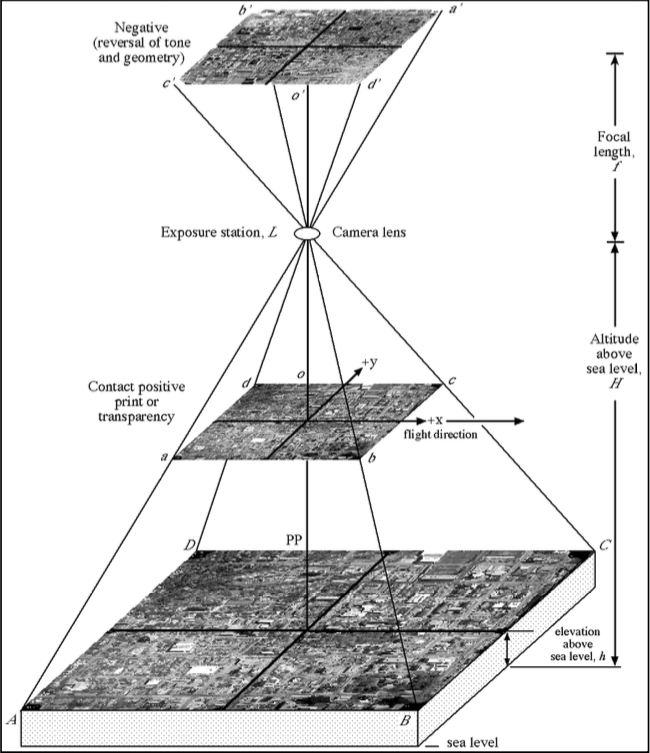
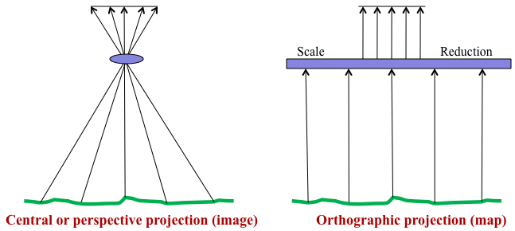
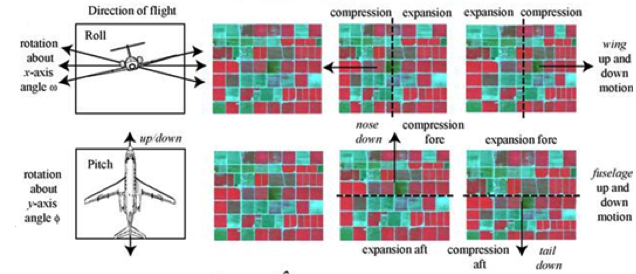
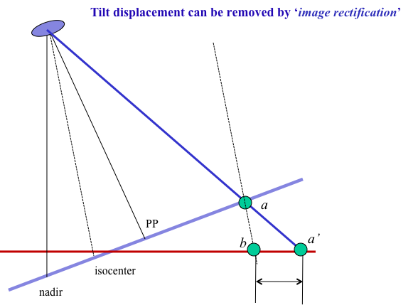
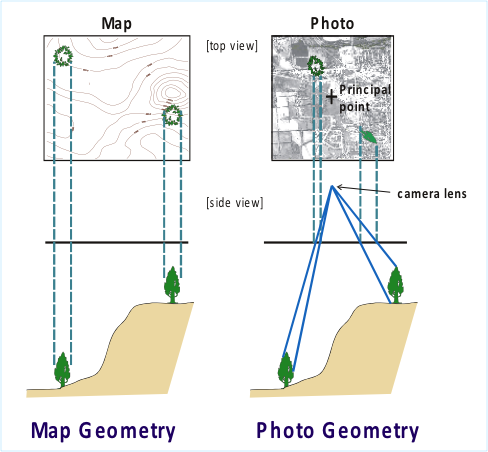
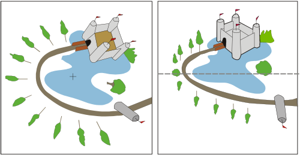

GEOG*2420
The Earth From Space
Photogrammetry Part 1
John Lindsay
Fall 2015
Readings
Jensen Chapter 6
Photogrammetry
- Photogrammetry is the art and science of making accurate
measurements by means of aerial photography.
- Focused on gaining quantitative information from images
- Analog vs. digital photogrammetry
Photogrammetric measurements
- From a single vertical image:
- Photo scale
- Object height, length, area, perimeter
- Object grayscale tone or colour
- From multiple overlapping images:
- Precise planimetric (x, y) feature location
- Precise location height (z)
- Digital elevation models (DEMs)
- Bathymetric models

(source: Jensen, 2006)
Images are not maps

(Modified From: Paine and Kiser, 2012)
Photo centers
- Principal Point
- Lens distortion is radial from PP
- Nadir
- Topographic displacement is radial from nadir
- Isocenter
- Tilt displacement radiates from the isocenter
- On a vertical photo, all three are coincident!
Distortion and Displacements
- Distortion is a shift in object positions in
the image that alters the perspective of the
image (i.e. the central projection)
- Displacement is a shift in object positions
that does not affect the perspective.
- Main distortions and displacements:
- Lens distortion, Tilt displacement, and Topographic (relief) displacement
Lens distortion
- Caused by imperfections in the geometry of the lens.
- Causes objects in image to appear closer or farther from the PP
than they actually are.
- Solved by calibration of the lens
- Only needed for most precise mapping as expensive cameras come
with near-perfect lenses (expensive!)
Tilt displacement

(source: Jensen, 2006)
Tilt displacement

(Modified From: Paine and Kiser, 2012)
Topographic displacement
- Most serious displacement, especially in areas of high relief.
- Corrected by orthorectification.
- Can be useful for measuring heights and stereoscopic viewing.
Topographic displacement

(From: Lillesand et al., 2012; modified by Mersey)
Topographic displacement

(From: Lillesand et al., 2012; modified by Mersey)
Image scale
- The scale of an aerial photograph expresses the relationship between distance
on the image and actual ground distance.
- The larger the scale of a photograph, the more detail can be resolved;
however, more images will be needed to cover a given ground area.
Image scale
- Scale can be expressed by:
- Scale= Image Distance / Ground Distance
- verbal expression
- bar or graphic scale
- representative fraction (RF)
Image scale
| Small scale | 1:24,000 |
| Medium scale | 1:10,000 to 1:24,000 |
| Large scale | 1:1000 to 1:10,000 |
| Very large scale | 1:1000 and larger |
Photo-scale Reciprocal (PSR)
- The inverse of the RF
- PSR is unitless
- Example: if RF is 1:24,000 then PSR = 24,000
- That is, the ground distance is 24,000 × the image distance